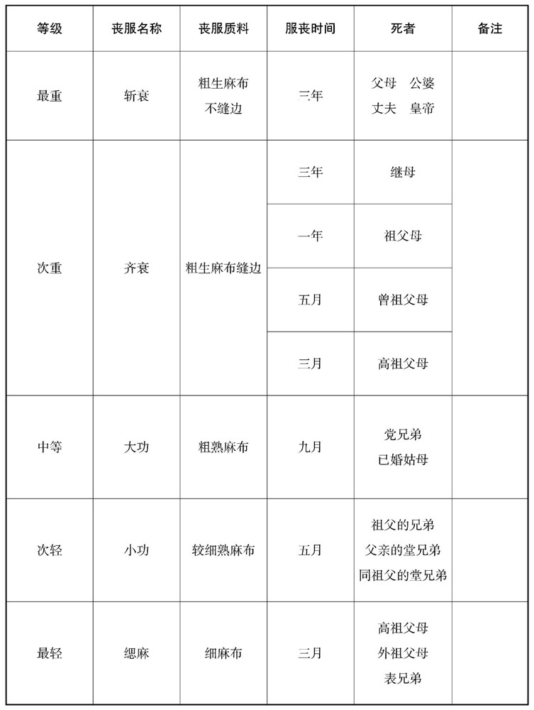

公元574年资治通鉴：本年记事、原文与白话对照
按原书编年位置阅读；追叙和史论不等于本年发生的事件。白话采用所据译本，缺译不以生成译文补齐。
卷171 · 本年记事
公元574年 · 陈高宗宣皇帝太建六年
六年〔（甲午、五七四）〕
上传原文的注释括号有异常，字符原样保留；无法可靠划分的段落默认全文显示。
本年事件索引（现代整理）
- 北周封宇文宪等七人为王
- 周主祭祀太庙并亲耕藉田
- 陈宣帝祭祀太庙
- 陈军攻下广陵金城
- 发生日食
- 高纬返回邺城
- 北周封宇文贤等六人为王
- 陈宣帝亲耕藉田
- 高思好据朔州反叛，败亡投水自尽
- 高思好伏诛后，告发者弟弟求赏未获
- 高纬返回邺城并任唐邕录尚书事
- 周武帝前往云阳宫
- 周武帝侍奉病重的叱奴太后，太后去世后决定守三年丧
- 北齐派薛孤康买吊唁叱奴太后，高纬又为穆后制作珠裙
- 周武帝跣足送葬文宣皇后，并下令按礼守丧
- 北齐大赦天下
- 北齐派皮景和驻扎西兖州防备陈军渡淮
- 北周禁止佛道二教，销毁经像并令僧道还俗
- 陈朝周弘正去世
- 北周铸造五行大布钱，一枚抵十枚布泉
- 北周设立通道观统一圣贤教法
- 宇文直起兵袭击长安未遂，被俘后废为庶人并处死
- 周武帝再次前往云阳宫
- 高纬前往晋阳并任高劢为尚书右仆射
- 周武帝前往同州
- 北周派杨尚希、卢恺出使陈朝
- 周武帝巡视蒲州、同州后返回长安
- 陈朝任王玚为右仆射、孔奂为吏部尚书，孔奂拒绝为叔陵求官
- 高绰虐杀百姓取乐，后被高纬默许与宠胡搏斗时掐死

本年形势与背景参考图
春，正月，壬戌朔，周齐公宪等七人进爵为王。
春季，正月，壬戌朔（初一），北周齐公宇文宪等七人进爵为王。
己巳，周主享太庙；乙亥，耕藉田。〔藉，秦昔翻。〕
己巳（初八），北周国主到太庙祭祀；乙亥（十四日），到藉田举行耕种仪式。
壬子，〔【章：十二行本「子」作「午」；乙十一行本同；张校同。】〕上享太庙。
壬午（二十一日），陈宣帝到太庙祭祀。
甲申，广陵金城降。〔去年九月，樊毅克广陵楚子城，其金城至是始降。降，户江翻。〕
甲申（二十三日），广陵城牙城中的将士向陈朝投降。
二月，壬午〔【章：孔本「午」作「辰」；张校同。】〕朔，日有食之。
二月，壬辰朔（疑误），有日食。
乙未，齐主还邺。〔去年十月如晋阳，至是始还。〕
乙未（初五），北齐后主回邺城。
乙酉，周纪国公贤等六人进爵为王。
丁酉（初七），北周纪国公宇文贤等六人进爵为王。
辛亥，上耕藉田。梁初，依宋、齐，以正月用事。天监十二年，武帝以为启蛓而耕，书云：「以殷仲春，」藉田理在建卯，于是改用二月。陈因而不改。藉，而亦翻。〕
本段缺少可靠对应白话，原文完整保留；未使用生成译文。
齐朔州行台南安王思好，本高氏养子，骁勇，得边镇人心。〔骁，坚尧翻。〕齐主使嬖臣斫骨光弁至州，〔斫骨，虏复姓。嬖，卑义翻，又博计翻。〕光弁不礼于思好，思好怒，遂反，云欲入除君侧之恶」。进军至阳曲，〔五代志：太原郡汾阳县，旧曰阳曲。〕自号大丞相。武卫将军赵海在晋阳，〔【章：十二行本「阳」下有「掌兵」二字；乙十一行本同；孔本同；张校同。】〕苍猝不暇奏，矫诏发兵拒之。矫诏发兵拒之。帝闻变，使尚书令唐邕等驰之晋阳，〔之，往也。〕辛丑，帝勒兵继进。未至，思好军败，投水死。其麾下二千人，刘桃枝围之，且杀且招，终不降，以至于尽。
北齐朔州行台南安王高思好，原先是高氏的养子，勇猛矫健，很得边镇的民心。北齐后主派宠臣斫骨光弁到朔州，他对高思好很不礼貌，高思好大怒，便起来造反，说：“我要去朝廷清除皇上身边的坏人。”进军到达阳曲，自称大丞相。在晋阳的武卫将军赵海，仓促间来不及向朝廷启奏，便假借后主的诏命发动军队进行抵抗。北齐后主听说有变，派尚书令唐邕等急驰到晋阳。辛丑（十一日），后主亲自统率军队随后进发。还没到晋阳，高思好的军队失败，只得投水自尽。他部下的二千军队，被刘桃枝包围，一面斩杀一面招降，他们始终不肯投降，直到全军覆没。
先是有人告思好谋反，〔降，户江翻。先，悉荐翻。〕韩长鸾女适思好子，奏言：「是人诬告贵臣，下杀无以息后。」乃斩之。思好既诛，告者弟伏阙下求赠官，长鸾不为通。〔通鉴言齐嬖幸壅蔽之祸。为，于伪翻。〕
当初有人举报高思好预谋造反，韩长鸾的女儿是高思好的儿媳妇，便向朝廷上奏说：“这个人诬告大臣，不把他杀掉就不得安宁。”于是后主将举报人处死。高思好死后，举报人的弟弟伏在宫阙下请求后主授给官职，韩长鸾不肯替他启奏。
丁未，齐主还邺。甲寅，以唐邕为录尚书事。
丁未（十七日），北齐后主回邺城。甲寅（二十四日），任命唐邕为录尚书事。
乙卯，周主如云阳宫。
乙卯（二十五日），北周国主去云阳宫。
庚申，周叱奴太后有疾。〔叱奴，虏复姓。〕三月，辛酉，周主还长安。癸酉，太后殂。帝居倚庐，〔陆德明曰：庐倚东墙而为之，故曰「倚庐」。考异曰：隋书张衡传云：「武帝居忧，与左右出猎，衡露发舆榇切谏。」按帝居丧有礼，疑衡自叙之妄。〕朝夕进一溢米。〔郑玄曰：二十两为溢。于粟米之法，一溢，为米一升二十四分升之一。溢，音逸。〕群臣表请，累旬乃止。命太子总厘庶政。〔厘，治也。〕
卫王直谮齐王宪于帝曰：「宪饮酒食肉，无异平日。」帝曰：「吾与齐王异生，〔异生，谓异母也。〕俱非正嫡，特以吾故，同袒括发。〔袒者，肉袒；括者，结也。杜预曰：以麻约发。〕汝当愧之，何论得失！汝，亲太后之子，特承慈爱；但当自勉，无论他人。」
庚申（三十日），北周的叱奴太后生病 。三月，辛酉（初一），北周国主武帝回长安。癸酉（十三日），叱奴太后去世。武帝住在居丧的房子，早晨和晚上只吃很少的饭。群臣上表请求武帝不要缩食，几十天以后才停止。命令太子总管各项政务。
卫王宇文直对武帝诬陷齐王宇文宪说：“宇文宪饮酒吃肉，和平时一样。”武帝说：“我和齐王是异母所生，都不是正宗嫡子，由于我的缘故，一起为太后服丧。你应当感到羞愧，谈不到什么得和失！你，是太后的亲生儿子，特别受到她的慈爱；你应当自勉，不要去议论别人。”
夏，四月，乙卯，齐遣侍中薛孤康买吊于周，〔薛孤，虏复姓。〕且会葬。
初，齐世祖为胡后造珠裙，〔为，于伪翻；下同。〕所费不可胜计；〔胜，音升。〕为火所焚。至是，齐主复为穆后营之。〔复，扶又翻。〕使商胡赍锦彩三万，与吊使偕往市珠。〔使，疏吏翻。〕周人不与齐主竟自造之。及穆后爱衰，其侍婢冯小怜大幸，拜为淑妃；与齐主坐则同席，出则并马，誓同生死。
夏季，四月，乙卯（疑误），北齐派侍中薛孤康买到北周吊唁叱奴太后去世，并参加葬礼。
当初，北齐武成帝为胡后做珍珠编的裙裤，所用的钱无法计算；后来这件裙裤被火烧毁。这时，北齐后主又要替穆后做一件。派经商的胡人带着三万段彩色丝绸，和吊唁的使者一起到北周采购珍珠。北周人不肯卖给他们，后主竟自己设法做了一件。后来穆后失宠，穆后的侍婢冯小怜却大受后主的恩宠，被封为淑妃；和后主坐同席，出并马，两人发誓同生共死。
五月，庚申，周葬文宣皇后于永固陵；周主跣行至陵所。辛酉，诏曰：「三年之丧，达于天子。但军国务重，须自听朝。衰麻之节苫庐之礼，率遵前典，〔丧服小记：斩衰括发以麻，寝苫居庐。朝，直遥翻。衰，七回翻。苫，息廉翻。〕以申罔极。〔诗：父兮生我，母兮鞠我，欲报之德，，昊天罔极。百僚宜依遗令，既葬而除。」〔除服也。〕公卿固请依权制，帝不许，卒申三年之制。〔卒，子恤翻。〕五服之内，亦令依礼。〔五服者，斩衰三年服，齐衰期年服，大功九月服，小功五月服，缌麻三月服。〕
五月，庚申（初一），北周在永固陵葬文宣皇后；北周国主赤脚走到陵地。辛酉（初二），下诏书说：“三年之丧，天子也要遵守。但是国事军事很繁重，必须亲自上朝听政。对丧服的规定，居丧处所的礼仪，一律遵照以前的制度，以表明我对太后无穷的思念。百官应该遵照过去的规定，太后埋葬以后就可以脱掉丧服。”王公百卿坚持请求武帝临时改订丧礼的规定，武帝不准，最后重申服丧三年的制度。凡属于丧服之内的亲疏五等，都按丧礼规定的五种服丧时间执行。
庚午，齐大赦。
庚午（十一日），北齐大赦全国。
齐人恐陈师渡淮，使皮景和屯西兖州备之。〔西兖州治定陶。〕
北齐怕陈朝军队渡过淮河，派皮景和屯兵在西兖州戒备。
丙子，周禁佛、道二教，经、像悉毁，〔经，谓二教之书。像，谓佛像、天尊像。〕罢沙门、道士，并令还俗。并禁诸淫祀，非祀典所载者尽除之。
丙子（十七日），北周禁止佛教、道教，把佛、道经典及偶象全部销毁，取缔僧人、道士，命令他们还俗。并禁止所有滥设的祠庙，不是祀典记载中列名的人物，全部废除祭祀。
六月，壬辰，周弘正卒。〔卒，子恤翻。〕
六月，壬辰（初三），陈朝的周弘正去世。
壬子，周更铸五行大布钱，一当十，与布泉并行。〔行布泉见一百六十八卷世祖天嘉元年。更，工衡翻。〕
壬子（二十三日），北周改铸五行大布钱，以一当十，和布泉一同流通。
戊午，周立通道观以壹圣贤之教。〔观，古玩翻。〕
戊午（二十九日），北周建立通道观以统一圣贤的政教。
秋，七月，庚申，周主如云阳，以右宫正尉迟运兼司武，〔左传：宋平公曰：「司武而梏于朝。」杜预注：司武，司马。周建六官，已有大司马，司武盖其属也。尉，纡勿翻。〕与薛公长孙览辅太子守长安。〔长，知两翻。〕
初，帝取卫王直第为东宫，〔建德元年，立太子，始建东宫。〕使直自择所居。直历观府署，无如意者；末取废陟屺寺，欲居之。〔陟屺寺，取望母为名，直意欲以同母感动周主。〕齐王宪谓直曰：「弟子孙多，此无乃褊小﹖」〔屺，墟里翻。褊，补辨翻。〕直曰：「一身尚不自容，何论论子孙！」直尝从帝校猎而乱行，帝对众挞之，直积怨愤，因帝在外，遂作乱。乙酉，帅其党肃章门。〔肃章，宫门名。唐长安太极宫，太极殿后，两仪殿前，中为朱明门，东则虔化门，西则肃章门，盖周遗制。帅，读曰率。〕长孙览惧，奔诣帝所。尉迟运偶在门中，直兵奄至，手自阖门。直党与运争门，斫伤运指，仅而得闭。直不得入，纵火焚门。运恐火尽，直党得进，取宫取宫中材木及榻以益火，膏油灌之，火转炽。久之，直不得进，乃退。运帅留守兵，因其退而击之，〔帅，读曰率；下同。〕直大败，帅百余骑奔荆州。〔欲就梁。骑，奇寄翻。〕戊子，帝还长安。八月，辛卯，擒直，废为庶人，囚于别宫，寻杀之。以尉迟运为大将军，赐赉其甚厚。
丙申，周主复如云阳。
起初，北周武帝征收卫王宇文直的王府为东宫，让宇文直自己挑选居住的地方。宇文直看了所有府署的房子，没有一处中意的；最后选中荒芜的陟屺寺，要在那里居住。齐王宇文宪对宇文直说：“弟弟的子孙很多，这个地方岂不小了些？”宇文直说：“自己单身一人尚且得不到容纳，还谈什么子孙！”宇文直曾经跟随武帝到野外围猎时扰乱行列，被武帝当众鞭打，宇文直积下怨恨，当时武帝在外，他便聚众作乱。乙酉（二十七日），宇文直率领党羽袭击肃章门。长孙览惧怕，逃奔到武帝那里。尉迟运恰好在肃章门里，宇文直的士兵突然来到，尉迟运用手将门关上。宇文直的党羽和尉迟运争夺大门，用刀砍伤尉迟运的手指，宫门刚刚能够关上。宇文直进不了门，便放火焚烧肃章门。尉迟运恐怕火焰息灭，宇文直的党羽得以进入门内，便取来宫中的木材和床榻投入火中加大火势，还用油脂灌浇，火势越加炽烈。过了很久，宇文直还是无法进入，于是退走。尉迟运率领留守的士兵，见他们退走而追击，宇文直大败，率领百余名骑兵逃奔荆州。戊子（三十日），武帝回长安。八月，辛卯（初三），捉到宇文直，将他废为百姓，囚禁在别的宫里，不久后将他杀死。任命尉迟运为大将军，赏赐他很多东西。
丙申（初八），北周国主再次去云阳。
丙申，周主复如云阳。〔复，扶又翻。〕
本段缺少可靠对应白话，原文完整保留；未使用生成译文。
癸丑，齐主如晋阳。甲辰〔寅〕，齐以高劢为尚书右仆射。〔劢，音迈。〕
癸丑（二十五日），北齐后主去晋阳。甲寅（二十六日），北齐任命高劢为尚书右仆射。
九月，庚申，周主如同州。
九月，庚申（初三），北周国主去同州。
冬，十月，丙申，周遣御正弘农杨尚希、礼部卢恺来聘。〔武成元年，增御正四人，位上大夫。保定四年，又改礼部礼为司宗，大司礼为礼部。杜佑曰：周竹制：礼部中大夫，属春官。〕恺，柔之子也。〔卢柔仕魏为中书监。〕
冬季，十月，丙申（初九），北周派御正弘农人杨尚希、礼部卢恺到陈朝聘问。卢恺是卢柔的儿子。
甲寅，周主如蒲州；丙辰，如同州；十一月，甲戌，还长安。
甲寅（二十七日），北周国主去蒲州；丙辰（二十九日），去同州；十一月，甲戌（十八日），回长安。
十二月，戊戌，以吏部尚书王玚为右仆射，度支尚书孔奂为吏部尚书。玚，冲之子也。〔玚，雉杏翻，又音畅。度，徒洛翻。〕
时新复淮、泗，攻战、降附，功赏纷纭。〔攻战叙其功，降附叙其赏。降，户江翻。〕奂识鉴精敏不受请托，事无凝滞，人皆悦服。湘州刺史始兴王叔陵，屡讽有司，求为三公。奂曰：「衮章之职，本以德举，〔三公一命。衮，命服，身之章也。〕未必皇枝。」因以白帝。帝曰：「始兴那忽望公！且朕儿为公，须在鄱阳王后。」〔言世祖之子常先为公。〕奂曰：「臣之所见，亦如圣旨。」
十二月，戊戌（十二日），陈朝任命吏部尚书王为右仆射，度支尚书孔奂为吏部尚书。王是王冲的儿子。
当时陈朝刚收复淮、泗，对攻战有功及投降归附的人论功行赏的事纷纭复杂。孔奂鉴别人才精到敏捷，不受别人的请托，处理事情从不拖拉，人们都心悦诚服。湘州刺史始兴王陈叔陵，屡次向有关部门暗示，要求任命自己为三公。孔奂说：“穿兖服的官职，本来是从品德的标准来推举的，未必都是皇帝的亲属。”并把这件事报告宣帝。宣帝说：“始兴王怎么突然想做三公，况且朕的儿子当三公，必须排在我侄子鄱阳王之后。”孔奂说：“臣的想法，和陛下的旨意一样。”
齐定州刺史南阳王绰，喜为残虐，〔此定州治中山。，喜许既翻。〕尝出行，见妇人抱儿，夺以饲狗。妇人号哭，〔饲，礼吏翻。号，户刀翻。〕绰怒，以儿血涂妇人，纵狗使食之。常云：「我学文宣伯之为人。」齐主闻之，镇诣行在，至而宥之。问：「在州何事最乐﹖」〔乐，音各；下同。〕对曰：「多聚蝎于器，置狙其中，观之极乐。」帝即命夜索蝎一斗，比晓，得三二升，置浴斛，使人裸卧斛中，号叫宛转。帝与绰临观，喜噱不已。〔蝎，许竭翻，螫人虫，渡淮以北即有之。通俗文：，长尾曰虿，短尾曰蝎。索，山客翻。比，必寐翻，及也。浴斛，浴哭也。裸，郎果翻，赤体也。号，户刀翻。噱，其虐翻。嗢噱，卑不止。〕因让绰曰：「如此乐事，何不驰驿奏闻！」〔乐，音洛。〕由是有宠，拜大将军，朝夕同戏。韩长鸾疾之，是岁，出为齐州刺史。将发，使人诬告其反。奏云：「此犯国法，不可赦！」帝不忍明诛，使宠胡何猥萨与之手搏，搤而杀之。〔萨，桑割翻。搤，于革翻。〕
北齐定州刺史南阳王高绰，生性喜欢做残忍暴虐的事情，曾经外出行走，看到有个怀抱婴儿的妇女，便夺下婴儿喂狗。妇女哭喊，高绰大怒，醮了婴儿的鲜血涂在妇人身上，放狗去吃妇女，还常常说：“我是学文宣伯父的为人。”北齐后主听到后，将他锁送到自己在外地的住处，来了以后又饶恕了他。后主问：“你在州里感到最快乐的是什么事？”高绰回答说：“捕捉许多蝎子放在容器里，再放进一只猴子，看蝎螫猴子极其可乐。”后主立即命令在晚上捉一斗蝎子，到第二天清早，才捉到二三升，都放在澡盆里，叫人赤裸身子睡在盆里，这个被螫得宛转喊叫。后主和高绰亲临观看，不住地嬉笑。后主还责备他说：“这样快乐的事，为什么不派驿使赶快来向我报告！”高绰因此得到后主的宠信，拜他为大将军，从早到晚和后主在一起嬉戏。韩长鸾对此很厌恶，这一年，高绰被派出为齐州刺史。临出发前，韩长鸾派人诬告高绰要造反，上奏说：“这是违反国法，不能对他饶赦！”后主不忍心公开将高绰处死，便叫宠信的胡人何猥萨和高绰徒手角斗，把高绰扼死。
译本中未与胡注本可靠对应的内容
以下另列供核对版本差异，不并入胡注本正文。
译本所附古文
[8]辛亥，上耕藉田。
译本白话
辛亥（二十一日），陈宣帝到藉田举行耕种仪式。
译本所附古文
[11]丙辰，周大赦。
译本白话
丙辰（二十六日），北周大赦全国。